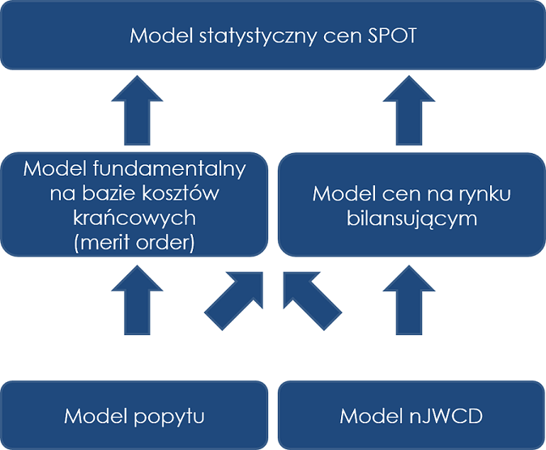

Wdrażanie produkcyjne GNU R na przykładzie branży energetycznej.
Wit Jakuczun
WLOG Solutions
2014-10-23
Plan prezentacji
O mnie
Studium przypadku
Czego nauczył nas projekt?
Co dalej?
O mnie
Kim jestem?
Absolwent wydziału
MIM UW
(2002)
Doktorat w
IPI PAN
(2006)
Właściciel firmy
WLOG Solutions
działającej od 8 lat.
Profesjonalne usługi modelowania matematycznego
Analiza danych
Optymalizacja
Symulacje
Specjalizacja w metodach optymalizacji kombinatorycznej
ale też w analizie danych wszelakich
Moja przygoda z GNU R
Użytkownik R od
2004
roku.
W
2006
roku wdrożyłem modele prognozujące zapotrzebowanie na gaz.
Prawdopodobnie pierwsze produkcyjne wdrożenie GNU R w Polsce.
Współtworzyłem pakiet
localsolver
.
Aktualnie GNU R wykorzystuję w codziennej pracy jako podstawowy język skryptowy.
Studium przypadku
Wyobraź sobie, że przeczytałeś, że…
Zapowiedziano budowę nowego bloku energetycznego.
Opublikowane zostały plany budowy znacznych ilości mocy wytwórczych w elektrowniach wiatrowych.
Pojawiła się długoterminowa prognoza pogody zapowiadająca bardzo mroźną zimę lub gorące lato.
Nastąpiła awaria standardowego bloku energetycznego wybranego typu (np. blok na węgiel kamienny).
Ogłoszona została znacząca zmiana cen węgla kamiennego.
Nastąpiła znacząca zmiana krajowego zapotrzebowania na energię elektryczną (np. w wyniku recesji).
Nastąpiła znacząca zmiana cen uprawnień do emisji CO2, np. w skutek interwencji Komisji Europejskiej.
Model średnioterminowy cen spot energii elektrycznej w Polsce

Przebieg projektu
Łączny czas projektu to około 4 miesiące
Dostarczono 10 pakietów GNU R
Łącznie napisano ponad 13K linii kodu
Interfejs użytkownika na bazie MS Excel
Czego nauczył nas projekt?
Narzędzia
Kontrola wersji kodu
SVN, GIT lub inne
RStudio IDE
lub inny sensowny edytor
Pisanie kodu w GNU R
Kod dzielimy na
funkcje
funkcja powinna robić jedną rzecz
nazwy funkcji muszą oddawać to co robi funkcja
Kontrolujemy argumenty funkcji
w oparciu o funkcję
stopifnot
Funkcjonalność zamknięta w
pakietach
z pełną dokumentacją
z opisem historii zmian
z uzupełnionymi zależnościami
Przykłady użycia pisane w oparciu o pakiet
knitr
bardzo wygodne do tworzenia
dokumentacji dla użytkownika
bardzo wygodne do testowania pomysłów analitycznych
Stosujemy wspólny styl kodowania
np.
Google’s R Style Guide
Piszemy w języku angielskim (zarówno funkcje jak i komentarze)
Czytamy
R Inferno
:)
Przydatne pakiety wykorzystane w projekcie
devtools
, żeby
sprawnie tworzyć pakiety
roxygen2
, żeby
wygodnie pisać dokumentację wewnętrzną GNU R
logging
, żeby
monitorować działania programu
testthat
, żeby
testować funkcjonalność programu
Przydatne pakiety wykorzystane w projekcie c.d.
data.table
, żeby
wydajnie przetwarzać duże ilości danych
reshape2
, żeby
wygodnie przetwarzać dane
parallel
i
doParallel
, żeby
w pełni wykorzystać moc obliczeniową komputera
TAK DZIAŁA POD WINDOWS :)
knitr
, żeby
wygodnie pisać dokumentację dla użytkownika i dla siebie
ggplot2
, żeby
wygodnie tworzyć czytelne wykresy
RSQLite
, żeby
wygodnie składować dane
XLConnect
, żeby
wygodnie współpracować z MS Excel
Inne pakiety, na które warto zwrócić uwagę
packrat
, żeby
zapomnieć o brakujących pakietach
miniCRAN
, żeby
mieć własne repozytorium pakietów w organizacji
magrittr
, żeby
pisać czytelny kod w oparciu o koncepcję przetwarzania potokowego
tidyr
, żeby
wygodnie tworzyć
uporządkowane dane
(ang.
tidy data
)
shiny
, żeby
tworzyć (nie)prosty interfejs użytkownika na bazie przeglądarki WWW
Co dalej z GNU R w przemyśle?
Nowe trendy
Duże wolumeny danych
Integracja z
Hadoop
Poprawa wydajności
Alternatywne implementacje R, np:
Revolution R Open
pqR
Obliczenia w oparciu o procesory graficzne, np.
gpuTools
Pisanie kawałków kodu w C++ w oparciu o pakiet
Rcpp11
Raczej jako pakiet a nie działanie ad-hoc
Komercyjne wersje GNU R
Oracle R Enterprise
Revolution R Enterprise
Wdrażanie GNU R w korporacjach
Dlaczego się nadaje?
Bo elastyczny
Bo bogatszy
Bo tańszy
Co z wydajnością?
Pamięć jest tania!
Są wersje komercyjne
Co z pracownikami?
Młodzi znają R
Starzy mogą się nauczyć :)
To już się dzieje!
Moving from SAS to R
by Revolution Analytics
Dziękuję za uwagę!
WLOG Solutions
ul. Harfowa 1A/25
02-389 Warszawa
WWW: http://www.wlogsolutions.com
Wit Jakuczun
tel: +48 601 820 620
@: wit.jakuczun@wlogsolutions.com